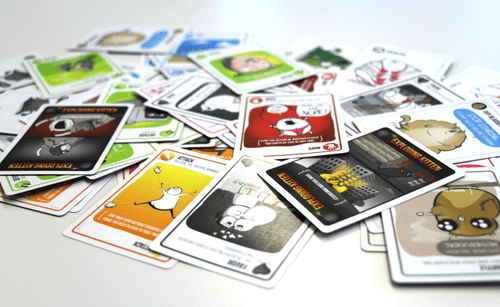

Exploding Kittens is a casual dedicated deck card game designed by Matthew Inman of The Oatmeal webcomic, Elan Lee and Shane Small, and first published by The Oatmeal in 2015. Beginning as a Kickstarter project seeking US$10,000 in crowdfunding, it exceeded its goal in eight minutes.
Exploding Kittens is a highly strategic kitty-powered version of Russian Roulette. Players take turns drawing cards until someone draws an exploding kitten and loses the game. The deck is made up of cards that let you avoid exploding by peeking at cards before you draw, forcing your opponent to draw multiple cards, or shuffling the deck.

HOW TO PLAY?
Exploding Kittens is very easy to play. On your turn, you do one of two things - play cards or pass - then draw a card from the deck.
If a player chooses to play cards, they can play as many cards as they like from their hand one at a time, performing their actions as they go. To play a card, the player places it face-up on top of the shared discard pile in the middle of the table. (If there isn’t a pile, make a new one.) They must follow the instructions written on the card before playing another card. (See what each card does below.)
WINNING STRATEGY
Exploding Kittens is a casual dedicated deck card game designed by Matthew Inman of The Oatmeal webcomic, Elan Lee and Shane Small, and first published by The Oatmeal in 2015. Beginning as a Kickstarter project seeking US$10,000 in crowdfunding, it exceeded its goal in eight minutes.